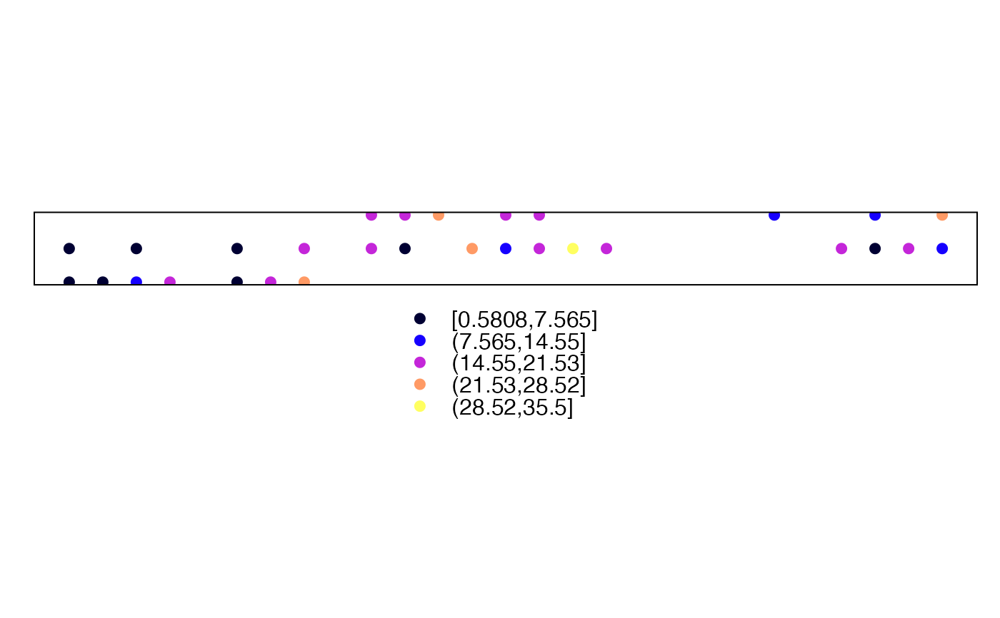

spatialForestSummary.RdFunctions to calculates a summary function for the forest or soil of all spatial elements in an object of class SpatialPointsLandscape-class, SpatialPixelsLandscape-class or SpatialGridLandscape-class.
spatialForestSummary(object, summaryFunction, ...)
spatialSoilSummary(object, summaryFunction, ...)An object of class SpatialPointsLandscape-class, SpatialPixelsLandscape-class or SpatialGridLandscape-class.
A function that accepts objects of class forest or soil, respectively.
Additional arguments to the summary function.
An object of class SpatialPointsDataFrame, SpatialPixelsDataFrame or SpatialGridDataFrame, depending on the input, containing the calculated statistics.
library(medfate)
#Load plot data and species parameters from medfate
data(examplepointslandscape)
data(SpParamsMED)
#Apply summary function
y <- spatialForestSummary(examplepointslandscape,summary.forest, SpParamsMED)
head(y@data)
#> N BA Tree_cover Shrub_cover LAI LAI_trees LAI_shrubs
#> 81065 7505.040 17.979315 100.00000 32 2.986326 1.526227 1.460099
#> 81066 9082.442 18.129386 100.00000 37 3.701360 1.662657 2.038703
#> 81067 23052.709 27.047489 100.00000 45 5.047250 3.329204 1.718046
#> 81068 18387.701 15.173311 100.00000 39 3.828430 2.130956 1.697474
#> 81069 16085.260 15.391164 100.00000 61 5.445796 1.764413 3.681383
#> 81070 1637.528 4.066122 47.43668 100 9.176192 0.701123 8.475069
#> Fuel Fuel_trees Fuel_shrubs Phytovolume PARground SWRground
#> 81065 0.8603646 0.5203893 0.3399753 0.302 20.8824232 31.34253
#> 81066 0.9088505 0.5027531 0.4060974 0.237 13.8066395 23.06897
#> 81067 1.3633089 0.9755124 0.3877964 0.503 6.7984832 13.64960
#> 81068 1.0058308 0.5922004 0.4136304 0.248 12.9128136 21.95316
#> 81069 1.3605642 0.5641413 0.7964228 0.301 5.4350012 11.56407
#> 81070 1.7054906 0.1859211 1.5195695 4.344 0.6547942 2.41157
#Plot basal area
spplot(y["BA"])
